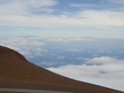

{kind=link}
{kind=link}
{kind=link}
{kind=link}
{kind=link}
{kind=link}
{kind=link}
{kind=link}
{kind=link}
{kind=link}
{kind=link}

Click on images for a larger version.
| Interesting trees along Waihee Ridge trail | |
|---|---|
|  | Mauna Loa and Mauna Kea from the top of Haleakala |
| Sunset from Kamaole Beach Park II | |
| Suspension bridge along Waihee Valley trail | |
| Lizard crawling on top of rain gauge | |
| Nakalele blowhole | |
| Along the Sliding Sands trail to Ka Lua o Ka Oo | |
| Ka Lua o Ka Oo | |
| Silversword | |
| Nearby peaks from inside Haleakala "crater" | |
| Cinder cones along the Sliding Sands trail | |
|
| State Park near Hana on the wet side of the island |
| The Ancient Burial Airport was nowhere to be found | |
| Bamboo forest along the hike to Waimoku Falls | |
| Waimoku Falls | |
| My new home (I'm on the lower level) | |
| Sunset over the island of Lanai. Photo taken from beach just in back of my condo. |
{kind=link}
{kind=link}
{kind=link}
{kind=link}
{kind=link}